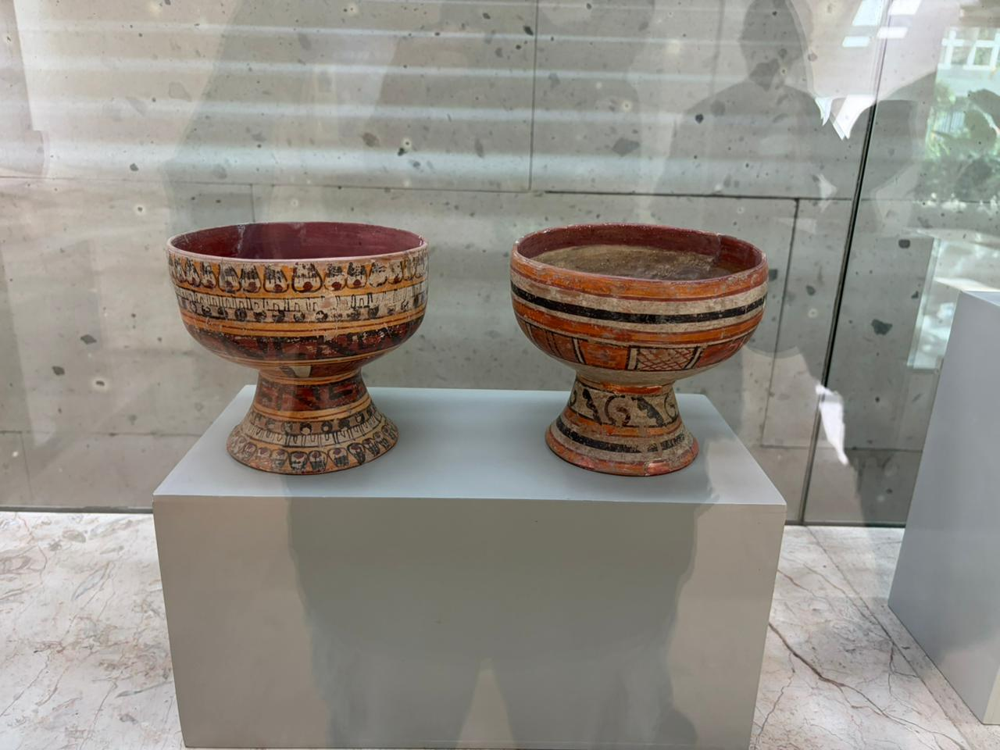

Copas de Cerámica Policromada

CARACTERÍSTICAS DEL OBJETO
- Tipo de objeto: Copas / Vasijas ceremoniales
- Material: Cerámica policromada
- Estilo: Mixteca-Puebla (Vibrante y detallado)
- Uso: Ceremonial (Consumo de chocolate o pulque)
- Usuarios: Nobleza / Élite
CONTEXTO CULTURAL
- Cultura: Mixteca o Cholulteca
- Periodo: Posclásico
- Región: Centro de México
- Tradición: Cerámica Mixteca-Puebla
INFORMACIÓN ADICIONAL
- Detalles: Precisión artística y colores brillantes característicos.
- Ubicación: Piezas similares se exhiben en el Museo Nacional de Antropología.
- Fuente Original: Catálogo MAX (Museo de Antropología de Xalapa).